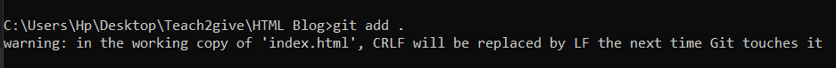

Check if you have an existing git in your machine or not. Run this command git --version.
If you have git it will look like sth like this,Version checkin results.
If not you will get something like
command not found: git
To download git on windows visit
Run the installer and check the necessary steps acccording to your preference.
Configuration of git
After installing run the following commands to set your username and email in your terminal.
--global means it applies to all projects on your computer. You can use git config user.name "Name" inside a project to override it locally.
Configuration Results.
To verify yuour settings run the command
git config --list
Setting up your Git username and email ensures your commits are properly attributed to you.
Initializing a Git Repository
What is a Repository
A Git repository is a virtual storage space where Git tracks and manages your project files and their revision history.
How to initialize a git repository
Open your terminal and navigate to your projects directory by using the command cd my-project where my-project stands for the folder where your project is located
Run the following command git status to check the state of the working directory and staging area. It shows if the files are being tracked by git. .This creates a hidden .git folder inside your directory, where git stores all the tracking information. If not you get the message fatal: not a git repository (or any of the parent directories): .git.
Run the following command git init
Initializing a Git repository in your project directory creates a hidden .git folder where Git tracks all changes.
Adding Files to the Staging Area
A staging area is an intermdiate space where you can organize changes before commiting them to the repository.
To add changes to the staging area use the command git add File_name i.e git add chapter1
When you want to add all files at a go you can use git add -A or git add .

Commiting Changes
To commit we use git commit -m "MESSAGE" command. Message refers to short descriptive commit message of your own. It answers the question what does the commit message do i.e git commit -m "write chapters 1 to 5"
To view past commits we use the command git log and git log --oneline for more compact view. To see changes in files we use git log -p
To go back to the previous commit we use git checkout commit-hash and to return to your latest commit you use git checkout main
Branches
Branches are timelines for a project that allow us to create separate contexts where we can try new things or even work on multiple ideas in parallel
Importance of Branches
Creating Branches
Use the command git branch BRANCH_NAME where you replace BRANCH_NAME with the prefered branch name i.e git branch prologue
Viewing All Branches
To view all branches use the command git branch with the active branch having an asterix beforeit.
Switching Branches
This means changing the active branch. To switch branches we use the command git switch BRANCH_NAME where you replace the BRANCH_NAME with the actual branch name i.e git switch chepkuruiprudence. This will change the active branch to chepkuruiprudence
Merging a Branch
After switching to the branch you want to work with, merge the feature branch into main using the command git merge feature-branch
and then push the update to the repo using the command git push origin main
Deleting a Branch
to delete a branch we use the command git branch -d BRANCH_NAME i.e git branch -d chepkuruiprudence